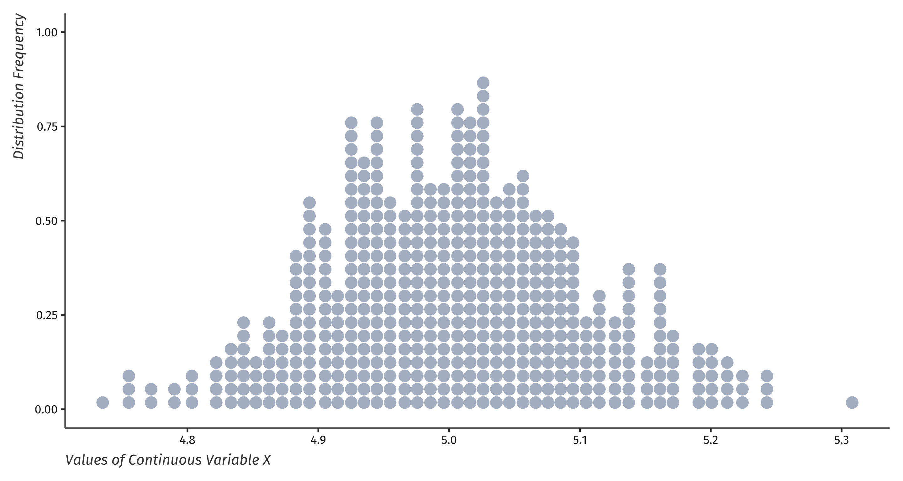
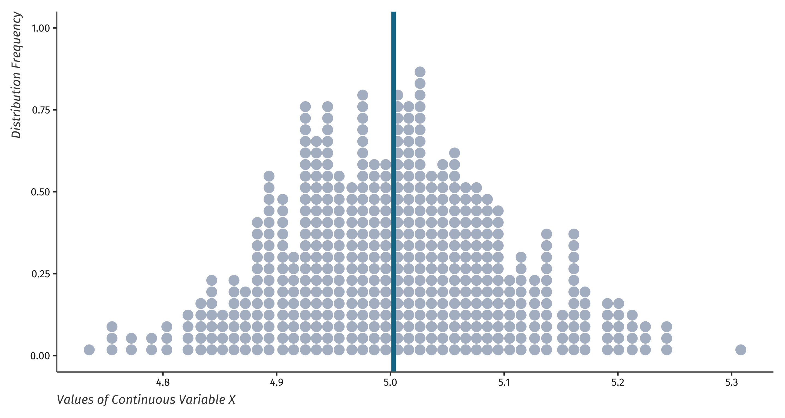
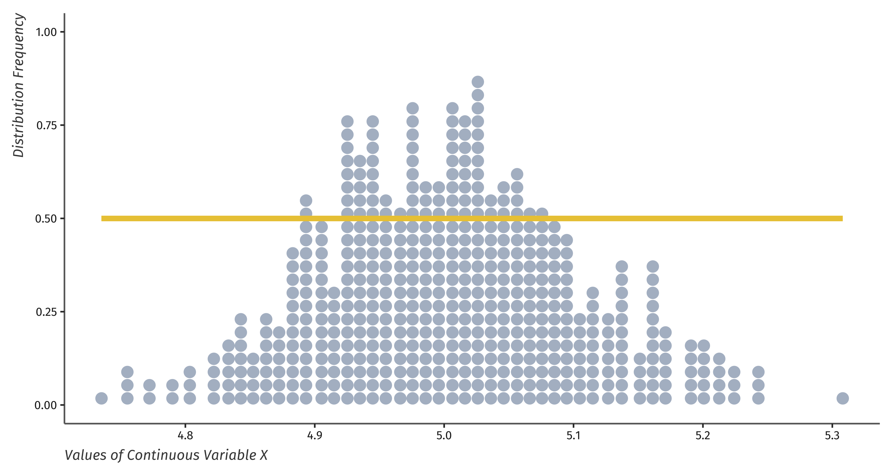
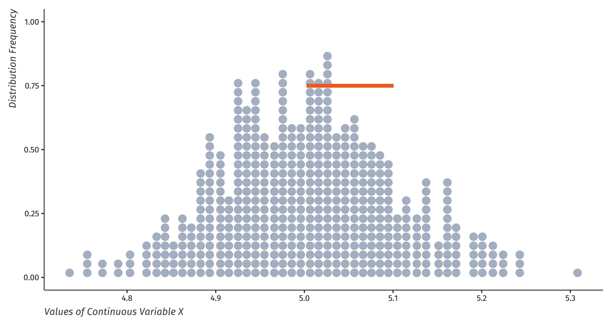
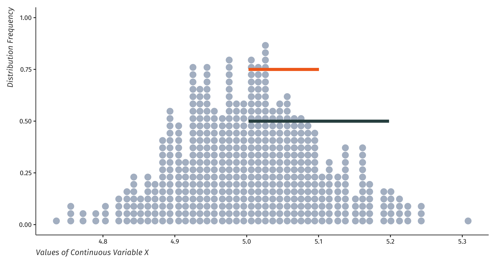
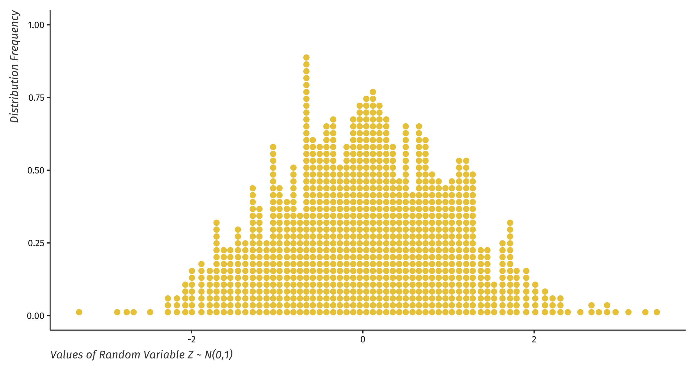

Discussion & Lab - Week 1
Data, Distributions, and Probability
1/27/23
Meet Your TA - Shyam
- My name is pronounced “shahm” and my pronouns are he/him
- I enjoy teaching! I want to create the best environment for you to learn.
- I’m a third year PhD candidate in the Brooks School of Public Policy
- I study health disparities, substance use, social policy, and inequality
- I grew up in the Midwest & did my undergrad at Indiana University
- Background is in public health, epidemiology, and statistics
- I worked in public policy consulting for 2 years at MITRE
- Likes: the cold, coffee, cooking & baking, impulse purchases, statistics (!!)
- Dislikes: cleaning ice off my car, waking up before 8a, statistics (sometimes)
Roadmap for Today’s Session
- Housekeeping & Brief Syllabus Overview
- Review of This Week’s Lectures
- Data, Variables, and Distributions
- Measures of Center and Spread
- Probability and the Normal Distribution
- Lab: UNGRADED STATA Proficiency Quiz
Housekeeping & Syllabus Review
Purpose of discussion sections and STATA labs
- These discussions are integral to the course goals and curriculum
- The lab component is particularly important as we work through projects
- My goal is preparing you for the work force in public policy analysis
- These jobs expect you to have statistical reasoning and analytical skills
- Corporate environments with quant folks are focused on replicable, consistent analysis
- Labs are shifting from application \(\rightarrow\) workflow development
- The class project
should will look like work done at a think tank (Brookings, Urban, etc)
- The projects are super valuable for quant jobs asking for writing & data samples
Attendance, expectations, and accessibility of course content
- Discussion section attendance is not optional and is expected (barring circumstances in the syllabus)
- I want to help build your workforce-directed skills! Attend discussions please!
- Week-to-week, discussions will follow a similar roadmap to today’s session
- Normally, no syllabus review. Just lecture review (1/3) and lab (2/3)
- Later in semester, will allot some discussions just for projects
- All course content will be accessible on Canvas within 24 hours of class
- Includes my slides, lab solutions, videos of discussion (I will record one per Friday), and notes
Office hours, review sessions, and reaching your TAs
- Office hours (M/T/Tr) are meant to provide additional clarification on course content
- My OH: Tuesdays & Thursdays from 9:30a to 11a in MVR 3318 (next to Prof. Bottan’s office)
- I am happy to carve out time via Zoom for folks unable to make these times.
- Prof. Bottan’s OH: Mondays from 9:30 to 11a in MVR 3220 (his office)
- I host review sessions in lieu of office hours for all exams
- Study guides are distributed via Canvas. Will answer Qs and clarifications.
- I am reliably available via email from 9 to 5 on M thru F
- I answer all emails within 48 hours: if you haven’t heard back, please bump it to the top of my inbox!!
Nitpicky things that will make my life easier if you do them (please)
- I use an email filter to put all class-related messages into a GMail folder
- Please include [PAM 3100] in the subject line
- Without this, there is a chance it goes to spam! I don’t want that!
- Discussion and OH are meant to complement lecture, but discussion content is lab-focused
- Towards the end of semester, I cannot cover discussion materials in OH and
- Please do not call me Mr. or Prof. - Shyam is perfectly fine
- My knees make me feel old after walking up stairs. I don’t need this too.
Your mental health and wellbeing should always come before this class
- Your brain is a muscle. It needs food, water, and rest.
- You don’t have to ask me to leave the room for water or restroom because you’re adults
- Your body needs sun! Seasonal affective disorder (aptly, SAD) is particularly real in Ithaca
- Our bodies are programmed to rest when it’s dark outside (like 5pm)
- You deserve rest. If coming to discussion is precluding this, please tell me.
- If you are struggling with your mental health or wellbeing, please reach out if you’re comfortable.
- While extensions/late assignment policy is firm, content can be made more accessible
Three things that will maximize the benefit of this class for everyone
- Every question is worth asking. Most questions could be asked better.
- “I’m confused on variables, can we go over it again?”
- “I’m confused. Can you go over the difference between a discrete and ordinal variable?”
- Things only get better with feedback. If something isn’t working for you, please tell me.
- Most often, others will benefit from things that help you. We learn in similar ways!
- I will have small feedback surveys used as attendance points throughout the semester
- If you can’t make it to discussion, please send me an email!
- I teach all 4 sections and will always offer attending at a different time
- If you want to avoid this offer, tell me in the email that you are out for the day.
Review of This Week’s Lectures
What is are data?
- Data are a collection of information – data points – that can be be communicated
Datasets come in a rectangular form (columns and rows). We call this “tidy data”.
Tidy data is constructed of variables, observations, and values such that:
- Each variable has its own column
- Each observation has its own row
- Each observation has a value – or “data point” – for each variable
What are variables? What types of variables do we use in statistics?
- Factor (categorical) variables reflect data as belonging to one or more groups
- Ordinal variables are distinct, reflecting ordered groups
- Numerical variables contain information recorded and interpreted as numbers
- Discrete – or count – variables are integer values \(\in 0, 1, \cdots, k\)
- Continuous variables have infinite possible values (integer, decimal, negative)
- We will focus heavily on continuous variables, their distributions, and characteristics
How do we measure the center of a data?

How do we measure the center of a data? Mean (\(\mu\))

How do we measure the spread of data?
How do we measure the spread of data? Range

How do we measure the spread of data? Variance
- Variance is the average, squared difference between each data point and the variable’s mean.
- A variable whose distribution has a high variance has many data points far away from the mean
- A variable whose distribution has a low variance means most data points are clustered around the mean
- The square root of the variance is the standard deviation (\(\sigma\))
How do we measure the spread of data? Standard deviation (SD)

How do we measure the spread of data? 2 SDs from the mean

What kind of distributions do random variables take?
- First: what is a random variable?
- Always a numeric quantity whose value depends on the outcome of a random event
- A random variable X has the values x such that its distribution can provide us the Pr(X = x)
- Discrete random variables
- Are comprised of integer values or counts of something (same as discrete variables)
- Have values that form a probability distribution
- Continuous random variables
- Are comprised of real (decimal) values which are not bounded like counts
- Have values that form a probability density function (PDF)
Consider a random variable Z ~ N(0,1): this is the Standard normal distribution

Using these measures, we can leverage the probability distribution of data
- Often, we’d like to know the probability of drawing a certain value from data distribution. How?
- Assuming a standard normal distribution, we can use STATA!
- To find the \(Pr(Z<c)\), run the command
display normal(c). This produces a lower tail probability
- Other times, we want to know the cut-off value \(c\) that gives a probability \(p\)
- Here, we can still use STATA but leverage the “inverse normal” functionality
- To find the critical value at which \(Pr(Z<c)\), run the command
display invnormal(p)
Lab: STATA Proficiency Quiz